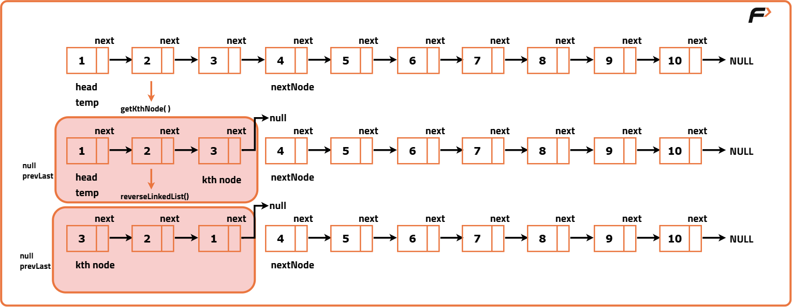
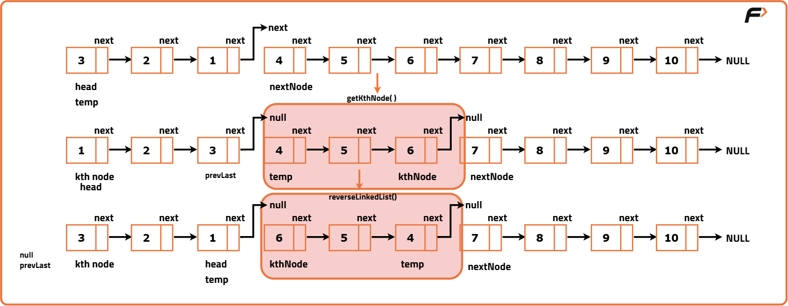
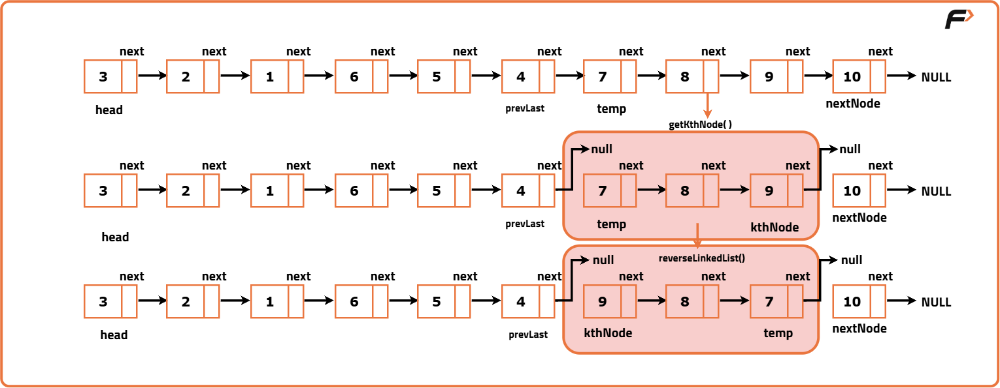
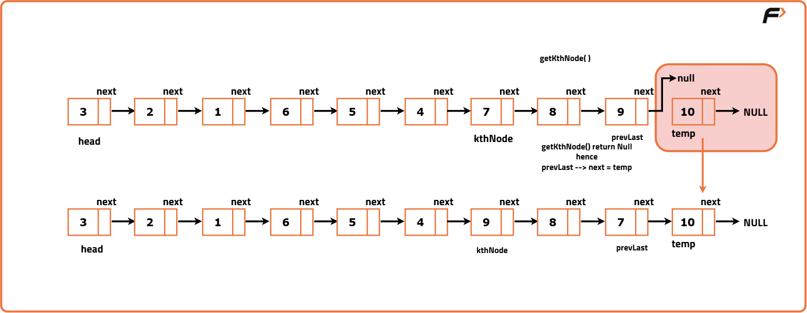

Reverse Linked List in groups of Size K
Problem Statement: Given the head of a singly linked list containing integers, reverse the nodes of the list in groups of k and return the head of the modified list. If the number of nodes is not a multiple of k, then the remaining nodes at the end should be kept as is and not reversed.
Do not change the values of the nodes, only change the links between nodes.
Examples
Input : head -> 1 -> 2 -> 3 -> 4 -> 5, k = 2 Output :head -> 2 -> 1 -> 4 -> 3 -> 5 Explanation :The groups 1 -> 2 and 3 -> 4 were reversed as 2 -> 1 and 4 -> 3.
Input :head -> 1 -> 2 -> 3 -> 4 -> 5, k = 3 Output :head -> 3 -> 2 -> 1 -> 4 -> 5 Explanation :The groups 1 -> 2 -> 3 were reversed as 3 -> 2 -> 1. Note that 4 -> 5 was not reversed.
Disclaimer: Here is the practice link to help you assess your knowledge better. It's highly recommend trying to solve it before looking at the solution.
Approach
Algorithm
reverseLinkedList: Reverses a linked list segment using the basic 3-pointer method (prev, curr, next). You reverse pointers one by one until the whole segment is flipped.
getKthNode: Given a starting node, it walks forward k steps and returns the k-th node. If fewer than k nodes exist, it returns null. This helps us slice the list into group of size k.
kReverse: The main function that keeps calling getKthNode to find valid k-sized segments, reverses them using reverseLinkedList, and connects everything back together.
- Start with a dummy node pointing to the head of the list to simplify edge cases.
- Set a pointer groupPrev to dummy (this keeps track of the end of the previous reversed group).
- While there are at least k nodes remaining:
- Use getKthNode from groupPrev to find the end of the current k-sized group.
- If getKthNode returns null (less than k nodes left), break the loop.
- Keep track of the next group’s start using kth.next.
- Temporarily break the link after the k-th node so we can reverse this segment cleanly.
- Call reverseLinkedList on the current group’s head to reverse this k-segment.
- Connect the previous group’s tail (groupPrev) to the head of the reversed segment.
- Connect the tail of the reversed segment to the start of the next group.
- Update groupPrev to point to the tail of the reversed segment.
- Once done, return the new head of the list (i.e., dummy.next).




Code
#include <bits/stdc++.h>
using namespace std;
// Definition of singly-linked list node
class ListNode {
public:
int val;
ListNode* next;
ListNode(int x) {
val = x;
next = NULL;
}
};
class Solution {
public:
// Function to reverse nodes in groups of k
ListNode* reverseKGroup(ListNode* head, int k) {
// Creating a dummy node to handle edge cases easily
ListNode* dummy = new ListNode(0);
dummy->next = head;
// Pointer to keep track of the previous group's tail
ListNode* groupPrev = dummy;
while (true) {
// Finding the k-th node from the groupPrev
ListNode* kth = getKthNode(groupPrev, k);
if (!kth) break;
// Store the next group's head
ListNode* groupNext = kth->next;
// Break the chain to reverse current k-group cleanly
ListNode* prev = groupNext;
ListNode* curr = groupPrev->next;
// Reversing k nodes
for (int i = 0; i < k; i++) {
ListNode* temp = curr->next;
curr->next = prev;
prev = curr;
curr = temp;
}
// Connecting previous group to the reversed group
ListNode* temp = groupPrev->next;
groupPrev->next = kth;
groupPrev = temp;
}
// Returning the new head
return dummy->next;
}
// Helper function to find the k-th node from the current node
ListNode* getKthNode(ListNode* curr, int k) {
while (curr && k > 0) {
curr = curr->next;
k--;
}
return curr;
}
};
// Driver code
int main() {
Solution obj;
// Creating the linked list: 1->2->3->4->5
ListNode* head = new ListNode(1);
head->next = new ListNode(2);
head->next->next = new ListNode(3);
head->next->next->next = new ListNode(4);
head->next->next->next->next = new ListNode(5);
int k = 2;
// Reversing in groups of k
ListNode* result = obj.reverseKGroup(head, k);
// Printing the reversed list
while (result != NULL) {
cout << result->val << " ";
result = result->next;
}
cout << endl;
return 0;
}
Complexity Analysis
Time Complexity: O(N),We visit each node exactly once during reversal and during group detection (getKthNode). So the total operations are linear with respect to the number of nodes in the list.
Space Complexity: O(1),The algorithm uses a constant amount of extra memory for pointers and dummy node. No additional data structures like arrays or stacks are used.